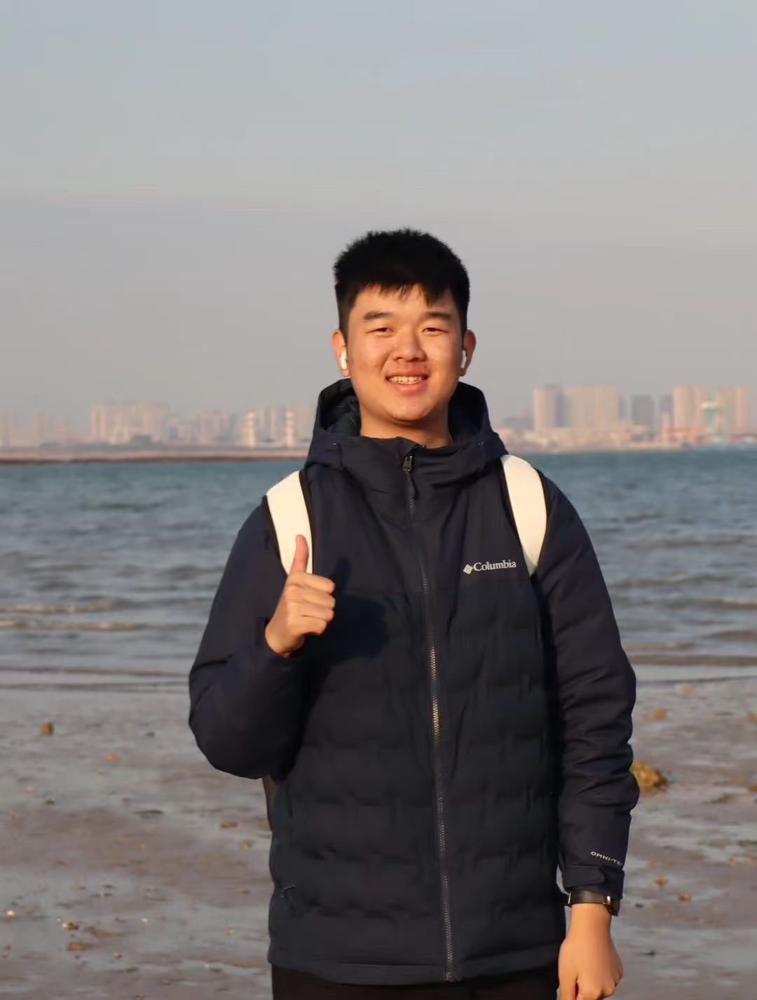
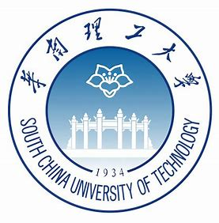

Evan Yufeng Li 李昱锋
"Patience is key in life." -- Jared MacCain
I am an undergraduate student at the School of Future Technology, South China University of Technology, majoring in Data Science and Big Data Technology.
My research interests focus on Reinforcement Learning and Large Language Models (LLMs).
Contact: Email / GitHub / Kaggle


South China University of Technology (SCUT), Guangzhou, China 09/21 – 06/25(expected) (Majoring in Data Science and Big Data Technology)
Academic Performance:
International Experience: National University of Singapore (NUS) Summer Program Summer 2024